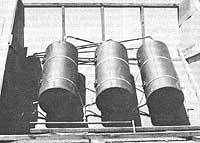
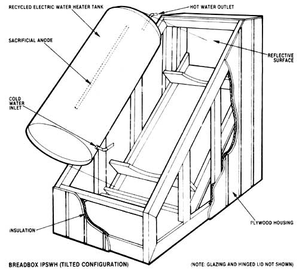

Build A Solar Water Heater: An Intregal Passive Solar Water Heater
Passive solar water heaters are easy to build, install and use.
by David Bainbridge
January/February 1984
For the do-it-yourselfer searching for an inexpensive, easy-to-build solar water-heating system, the integral passive solar water heater (IPSWH, pronounced ipswah ) is a dream come true. All you need to get going on this down-to-earth water warmer is a discarded electric water heater tank rescued from the local dump, a homemade plywood box to house it in, a can of flat black paint, a sheet or two of used window glass or clear plastic, a few common plumbing fittings and some pipe and insulation. Combine all that with some spare hours of satisfying sawing, hammering and wrench-turning, and you'll have an ongoing supply of hot water provided virtually free from that friendly furnace in the sky.
But before we get into the nitty-gritty of integral passive solar water heaters, let's run through a quick review of the basics of solar heating for those who may be new recruits to this wonderful world of free energy.
We'll be discussing solar collection systems for heating purposes - not for charging photoelectric cells or for other power applications - and there are only two basic types: active and passive. The essential difference between them is the use of external power: While active solar heating systems employ fans or heat pumps to circulate the Btu they gather, passive setups don't. As their name defines them, integral passive solar water heaters work on the latter principle, and that lack of power dependency and resultant energy savings is one of the IPSWH's greatest selling points.
Passive solar heaters can be subdivided into two classes: units in which the functions of heat collection and storage are separate, known as thermosiphon flat-plate systems, and arrangements that combine collection and storage into one integrated unit, namely, integral passive solar water heaters.
Since the flat-plate passive solar water heater is the predominant type in use today, most folks think of such collectors as being the best available for solar water heating. But in fact, for many uses, especially owner-built applications, IPSWH's outshine their flat-plate competition in almost every way - including ease and economy of installation, reliability and higher resistance to freezing.
How Solar Water Heaters Work
The design of all IPSWH's is based on a tank (or a series of tanks) painted flat black to absorb heat from the sun and then transfer the tapped Btu to the water stored within. IPSWH's are sometimes called batch heaters, because the heart of the system is the "batch" of water stored in the tank(s). To increase heat collection and reduce heat loss, a combination collection/storage tank is enclosed in an insulated box covered on the south-facing side and top with a glazing material, usually glass or molded plastic.
The standard IPSWH brings cold water into a solar collection tank through an inlet near the bottom (or through a dip tube that enters the tank at the top and discharges unheated water near the bottom), heats it, then moves it along to a backup heater - which can be powered by gas, electricity or wood - through an outlet near the top. This system uses waterline pressure for circulation, eliminating the need for expensive pumps and/or controls. During the summer months, or where it is warm and sunny year-round, the backup heater can often be turned off or bypassed entirely, with the IPSWH providing for all of your hot water needs.
Incidentally, for those of you who may be looking for solar-related business opportunities, IPSWH's have excellent potential for mass marketing/installation in tract housing areas, plus a growing array of commercial applications.
The Evolution of Passive Solar Water Heaters
Let's look now at the history and evolution of the IPSWH, and at five of the many designs that have proved effective and popular with home-based handypersons.
The principles used in modern IPSWH's are undoubtedly the same as those that were first applied to solar water heating. For example, Butch Cassidy's roost in Utah reportedly still bears remnants of a passive solar water warmer: a black can filled with water and placed in the sun to heat. Similar primitive IPSWH's are being used today in locations where people live without piped-in water and conventional energy sources such as gas and electricity.
The first commercial solar water heater, patented in 1891 by Clarence Kemp, was dubbed the Climax solar heater. Kemp's Climax used four cylindrical water tanks housed in a pine box lined with felt paper and covered with single-pane glass. This system typically was mounted on a roof, with cold water from a reservoir entering the first tank and passing through the other two in series, with gravity carrying the heated liquid down to the tap. By the year 1900, more than 1,600 Climax units were in use in America, primarily in the sunny regions of California and Florida.
In 1898, Frank Walker of Pasadena, California applied for a patent on an improved IPSWH. Walker's model was recessed into the roof, instead of being exposed as were the Climax heaters. And more important, the Walker unit incorporated backup connections to a "wetback" woodstove. Thus, the Walker model was the direct forerunner of today's most usual IPSWH application, a polar preheater feeding into a standard gas or electric water heater located inside the louse.
But successful as these early IPSWH's proved to be, they were destined to gradually disappear as enticingly cheap natural gas became available and was aggressively promoted.
A New Wave of Solar Hot Water
Fortunately for us, the popularity of natural gas didn't bring solar water-heating research and development to a total standstill. In one valuable experiment conducted at the University of California at Berkeley in 1936, a researcher named F. A. Brooks tested several IPSWH designs and demonstrated that tank-type solar heaters were capable of producing water warmed to more than 120°F. He found, too, that upright tanks placed on an incline delivered hotter water than horizontally situated units. Brooks also concluded that IPSWH's could produce hot water at a cost consistently below that of flat-plate systems. The only shortcoming of the IPSWH was lower early morning temperatures as a result of nighttime heat loss.
Contemporary investigators have reduced nighttime cool-down in several ways, the most effective involving the use of manual or automatic lids on the heater boxes. These hinged lids are raised during the day, their reflective undersides catching and directing additional solar Btu onto the tanks. At night, the insulated lids are closed to retain the stored heat. A second method of heat-saving relies on an ultramodern, specially coated metal foil, tagged "selective surface tape." This expensive - $75 to $80 for a 4' X 8' sheet! - but effective material offers a combination of high absorptance (on the average, about the same as flat black paint, approximately 95%) and low emissivity (thereby cutting heat loss).
Five Types of Solar Water Heating Systems
Let's take a look at five of the many types of integral passive solar water heaters in use today.
The single-tank IPSWH is often dubbed a "breadbox" heater, because it looks a lot like an oversized breadbox (see the illustration in the Image Gallery at right). Overall, it's probably the most economical and least complicated of the permanent IPSWH's to build, requiring only easily scrounged materials and basic construction skills.
For the "econo-model" breadbox unit, a standard electric water heater tank is painted flat black and housed in an insulated plywood box. Glass or another transparent glazing material covers the top and the south-facing side of the box. (Glass is generally the most suitable glazing for owner-built heaters.) And, while not always absolutely necessary, an additional hinged, insulated lid will reduce nighttime cool-down and increase the collector's efficiency.
Incoming water enters the breadbox near the bottom of the tank, with the sun-warmed water being drawn off from near the top and routed on to the backup unit inside the house. A horizontally oriented IPSWH provides the lowest heat gain, but is the easiest to build and is less visible than a vertical one. By using tilted tanks - which can be attained by vertically flat-mounting the unit on a pitched roof - the stratification of the water is increased and the solar angle is improved, resulting in higher temperatures.
The vertical three-tank IPSWH has as simple a design as the breadbox, but it's constructed on a larger scale. For the triple-tanker, three glass-lined electric water heater cores are painted flat black (or are covered with selective surface tape) and enclosed in a large, well-insulated box. Glass or other glazing material covers the south-facing side and the top of the box, and shuttering in the form of a lid or interior insulated "drapes" can be installed to improve heat retention. The three tanks are plumbed in series, with the protected central tank serving as the final stage before the heated water is discharged (see the photo).
Naturally-because of the greater collection surface area and improved thermal layering-the tilted position of the tanks and the series hookup provide better heating than is offered by the smaller, horizontal, single-tank breadbox. To test the efficiency of the three-tank IPSWH, I installed and monitored one for a full year at my home in north-central California . . . and found that it supplied an impressive 70% of my family's hot water!
A greenhouse IPSWH installation is the ticket for best performance and freeze protection in colder climates or during the winter months. Of course, you can increase the cold-weather efficiency of your solar water heater by locating it in virtually any protected, warm, sunlit enclosure . . . but an attached solar greenhouse is usually the best choice. Almost any IPSWH configuration can be used inside the plant room, with size and weight being the primary limiting factors. Usually, the heater is tucked up under the peak of the greenhouse roof to take advantage of the warm, rising air. And as with all IPSWH's, the collector tank should be painted flat black or coated with selective surface tape. For maximum efficiency and cold-proofing, an insulated box with top and south-facing glazing, and a hinged, insulated, after-hours lid is still recommended.
The inverted IPSWH offers another good method of reducing heat loss in colder climates and seasons, and is especially effective protection against after-dark cool-down. Visualize, if you will, a standard IPSWH with a black tank enclosed in an insulated box with south-facing and top glazing . . . and the whole works flipped on its lid! Now, the insulated portions of the heater box are looking at the sky, thereby significantly reducing nighttime heat loss. Sunlight gets to the collector tank(s) by way of one or a series of reflectors. At first, these upended heaters seem almost absurd. But they've performed quite well at sites throughout the country.
A low-cost IPSWH, which can be built for just a couple of bucks, was developed a few years ago by the Minimum Cost Housing Group at McGill University in Canada. This unit offers more Btu per dollar than any solar water heater designed to date, and should be useful to summer campers and owners of weekend homes with no conventional water-heating facilities. This budget water warmer can be built with a minimum of time, effort and cash by anyone in need of a little hot water for washing purposes, and requires only a plastic garbage bag, some PVC pipe and fittings, a few hand tools and a lighted cigarette for "welding" the plastic joints.
The heart of this heater is the common plastic garbage bag of 1.6-mil-thick, dark green polyethylene in a 26" X 35" size. The drain outlet is made of PVC pipe, washers and nuts, and is fastened to the bag mechanically (that is, by tightening the fittings over a hole punched in the plastic). Tests at McGill University demonstrated that a plastic bag of this type and size is strong enough to hold water to a depth of three inches, thus offering a capacity of about a dozen gallons. Temperatures of about 104°F were reached by just setting the bag of water out in the sun, and when the bag was placed inside an insulated box with a glass cover, the water temperature rose to a respectable 132°F!
The Six Commandments of Designing a Solar Hot Water System
A few basic principles and considerations govern the design, installation, use and maintenance of IPSWH's. If your heater's specifications and installation follow the six commandments listed below, it will work admirably and will provide you and your family with inexpensive solar-warmed water, no matter which specific design you decide to go with.
[1] Locate your heater for maximum sunlight exposure. Find a sunny, south-facing location for your IPSWH, preferably close to the conventional gas, electric or wood backup unit to minimize piping distance. You might have to indulge in a bit of calculating to be sure your solar collector will be exposed to the sun year round, but such an orientation is, after all, the single most important consideration.
[2] Make the collector as effective as you can. First, decide on the type of tank(s) you'll use for your heater. Tanks come in a wide variety of sizes and shapes, with most of them being usable. But long, thin cylinders are the most efficient (they have the greatest ratio of surface area to water volume), and by far the cheapest and easiest of these are used electric water heater cores.
If you prefer new tanks, out-of-the-carton, glass-lined electrical water heater cores - minus the heating element, outer insulation and sheet metal cover - can be ordered from several manufacturers. But if you plan to retrieve your cylinders from cast-off electric units, be sure to test them thoroughly for leaks and rust, and patch carefully where necessary. Never use a tank that you have doubts about.
One of the most suspect parts of any used electric heater core is the "sacrificial anode," a rod made of metal that has a low resistance to corrosion and is inserted into the tank from the top to attract and absorb any corrosive elements in the water. Examine the anode, and replace it if substantial corrosion and/or consumption is evident. A new anode costs only a few bucks, and it will add measurably to the longevity of your system.
Next, determine where your IPSWH will be installed - roof, platform, wall or ground - keeping in mind that a filled three-tank system tips the scales at a hefty 1,000 pounds or so. For most applications, it's best just to plop the heater right on the ground. This makes installation easier, eliminates the weight problem, and renders the manual raising and lowering of a night lid less of a chore. Finally, reflectors can be used to increase solar exposure, with a variety of materials being suitable for this purpose. (It's usually no problem to make a hinged lid serve double duty as a reflector when it's raised to its daytime position.)
[3] Insure that your water tank(s) will retain heat. There are a number of options for glazing the top and the south-facing wall of your IPSWH, including single- and double-paned tempered glass, Du Pont Tedlar-coated fiberglass exterior with Teflon-film interior glazing, acrylic or polycarbonate plastics, and R-3.6 Heat Mirror. In most cases, you should use two layers of your chosen glazing material with an air space between, to provide maximum heat retention. Be sure to caulk and tightly seal each of the panes.
[4] Size your heater for its intended application. To determine what size IPSWH you need, allow 30 gallons of water capacity per person in your household. Davis Alternative Technology Associates suggests about 2.5 gallons of water per square foot of glazing as the maximum ratio for good heating, and a smaller water-to-glazing ratio will speed up heat gain considerably. Using those figures, you can plan around a requirement of 30 gallons of water capacity and about 12 square feet of glazing per user. But if you can't meet these desired measurements, don't lose heart. Even a drastically undersized system will preheat water well above ground or ambient air temperature, thus providing economical solar water warming, which will conserve nonrenewable energy sources and save cash.
[5] Make an efficient connection to the backup system. Try to locate your IPSWH close to its conventional mate, thus minimizing the amount of connecting pipe required. To be sure the pipe is properly sealed and insulated, consider using Armaflex and a coating, or urethane foam with aluminum jacketing. (Although it can take up to 72 hours to freeze a standard exposed water heater tank at 12°F, pipes - because of their restricted size - are far more sensitive to cold.) Any exposed pipes in particularly cold places should also be heat-taped.
Before hooking your IPSWH to its backup unit, bleed the air out of the tank. You can bleed through the temperature/pressure valve (if you install such an overheating safety feature), or just leave a plug out at the top of the tank until the system is full of water. As a final precaution when galvanized tank fittings are to be used with copper tubing, make sure that the two metals are separated with nonconducting, dielectric fittings to prevent accelerated corrosion. I've had very good luck using copper tubing, plastic dielectric connections and galvanized fittings on my tanks.
[6] Build your solar water heating system to last. Use the best materials you can afford or scrounge, and take proper care in the construction of your unit. And be safe: Make sure that the tank supports are strong enough to bear the load they'll carry, and consider adding a tempering valve near the backup heater.
Conventional Water Heater Maintenance
Once in a while, someone will install a solar water preheater, while simultaneously neglecting his or her conventional gas or electric unit, with the results reflected in unnecessarily high water-heating bills, in spite of the solar preheater!
Four common forms of neglect are [1] exposing the conventional water heater to the cold by improperly insulating the room in which it is housed, [2] failing to insulate that tank sufficiently (inexpensive and easy-to-install "thermal blankets" can be added in just minutes), [3] maintaining an unnecessarily high temperature setting (which is sometimes the fault of a bad thermostat), and [4] allowing sediment to build up on the bottom of the tank and act as insulation between the water and the heat source.
Check your backup heater at the time you install your IPSWH. In fact, even if your solar unit is only a dream at the moment, it makes good energy sense to tune up your conventional water heater right now.
A Bright Future for Solar Water Heating
More research is needed to determine methods of increasing the effective solar collecting surface area of tanks, as well as to improve means of insulating for year-round operation in colder climates. Currently, sheltered integral passive solar water heaters can be cost-effective even in 6,000-degree-day climates. [EDITORS NOTE: Active collector alternatives that provide definite freeze protection even in very cold regions include "drainback" systems that empty out at night and heat-exchange units that employ an antifreeze solution in their exposed components.] But as IPSWH technology stands today, it definitely offers the energy-conscious do-it-yourselfer an attractive alternative to costly hot water and conventional energy dependence, and presents the solar professional with a low-overhead, uncrowded field of action.
Of course, you don't have to take my word for it. Look around, read around, shop around and - most important - build for yourself. I think you'll come to the same conclusion I did years ago, that integral passive solar water heaters provide the most economical, efficient, down-to-earth method of water warming under the sun.
EDITORS NOTE: For more of David's innovative, authoritative energy-saving ideas, check out his article Build a Water-Wall Home.
If there is no solar equipment outlet in your locale (for goodies such as selective surface tape), you'll be glad to know that there are a number of mail-order houses, one of which is Solar Components Corporation.
|
 David Bainbridge The author's "test-bed" - a tilted, three-tank integral passive solar water heater, provided his family with 70% of their total hot-water needs during a full year of monitoring. |
 David Bainbridge A horizontal, in-line, triple-tank integral passive solar water heater under construction. |
 Plans for a single-tank integral passive solar water heater. |